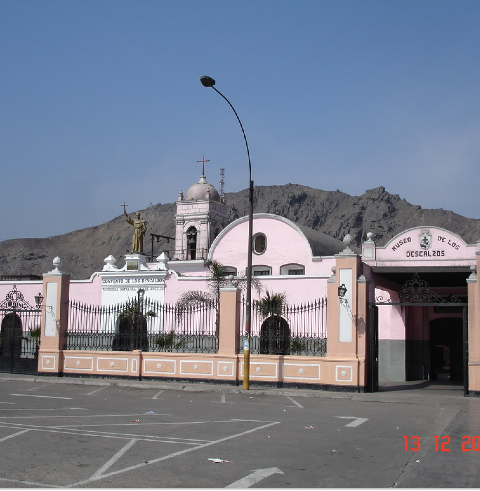

Inicio
Contacto
Planes
Nosotros
Iniciar sesión
Registrarme
ARTSWAP

¿Necesitas ayuda?
Contacto
Preguntas frecuentes
Comunidad
Telegram | Reddit
Whatsapp | Instagram
Preguntas frecuentes | Términos y condiciones | Privacidad

El Convento fue fundado en el siglo XVI por la Orden Franciscana. El convento de los descalzos es de arquitectura sencilla sin adornos, con corredores largos y silenciosos ubicado al pie del cerro tutelar San Cristobal por esta razón debido a la inclinación del cerro algunos de sus ambientes han sido construidos más elevados que otros, conectados por ello con diferentes escaleras. Lo que diferencia a este convento de otros recintos similares es, en primer lugar, su arquitectura rural. La sencillez y austeridad de sus formas se asemejan a las casas hacienda de la sierra. Las características de su construcción tienen origen en la decisión de los franciscanos de construir, a las afueras de la ciudad, casas de retiro especiales. De allí la razón de sus formas sencillas y onduladas, sin adornos.La pinacoteca del museo exhibe una colección de arte religioso virreinal. Muestra una espectacular colección de pinturas que suman un total de 400 piezas de pintores famosos como Murillo, Jaramillo, Bitti, Angelino Medoro, Miguel de Santiago, Diego Tito Quispe, Javier Cortes, Joaquin Urreta, Julian Jayo entre otros. En otros ambientes, como el refectorio y la botica del claustro de la enfermería, se aprecian bienes culturales de la época en su ubicación original.
Museo de los descalzos
Quiero inscribirme a estos eventos